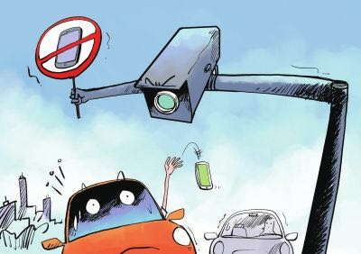

Proportion
The ratio of the frequency of driving to make phone calls and sending and receiving short messages
Of those drivers who use cell phones while driving, most think???
Interesting Numbers
An Australian study showed that cell phone use while driving was associated with slightly more than a fourfold increase in crash risk (odds ratio 4:1).
The National Highway Traffic Safety Administration (NHTSA) estimated that at any given time, 6 percent of drivers nationwide were holding a cell phone to their ear.
A review of 84 studies of the impact of cell phone use on driving performance concluded that whereas cell phone use has only a small or moderate impact on driving performance measures such as driving speed, lane position, and various other measures of vehicle control, it significantly slows the driver’s speed of reaction to critical events 0.23 seconds.
Views by age
Talking on the phone while driving differs depending on the age of the driver. Of the Echo Boomers (age 18–32), 83 percent report that they at least sometimes talk on the phone while driving. Of the Gen X (age 33–44), 85 percent. Of the Baby Boomers (age 45–63), 70 percent. Of the Matures (64+), 42 percent.
Law

The states of California and so on, outlaw the use of handheld phones while driving. Alaska, and so on , prohibit all drivers from text messaging while driving. Seventeen states also have laws that prohibit young drivers—drivers under the age of 18 in some cases, drivers with learner’s permits or provisional licenses in other cases—from using any kind of cell phone (whether handheld or hands-free) while driving.
Welcome to contact us
CLASS 6
Wang Fu Li Qin